Pepe
Protagonista
Estudiante de Ingeniería en Tecnología de Software procedente de Seybaplaya, decidido a salir adelante en la capital.
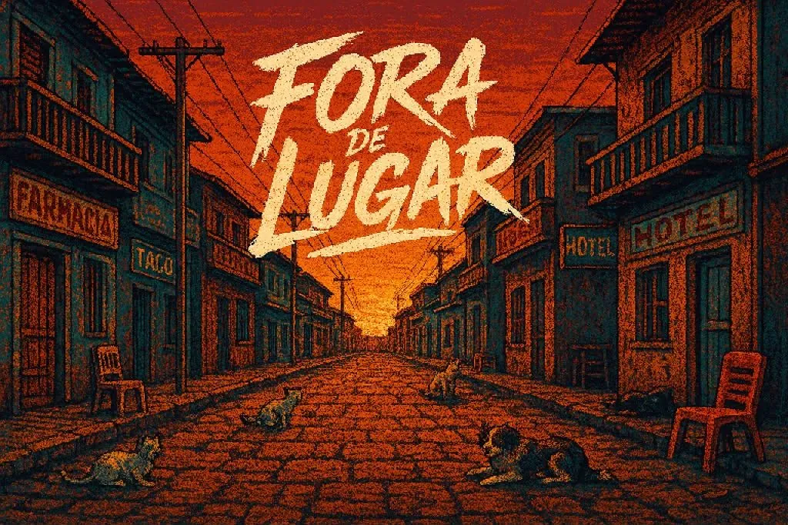
Lejos de casa, cerca de tu historia. Un videojuego narrativo 2D de simulación de vida en pixel art sobre la experiencia de los estudiantes foráneos.
▾ Desliza para explorarPuedes probar el prototipo directamente desde tu navegador o descargarlo para escritorio.
Pepe es un estudiante de Ingeniería en Tecnología de Software que se traslada de Seybaplaya a Campeche para continuar sus estudios universitarios. El juego plantea un semestre de 90 días dividido en diez actos. El demo actual abarca las primeras vivencias de su transición.
Fora de Lugar visibiliza los retos reales que afrontan los jóvenes al independizarse: presupuestar gastos, pagar alquiler, gestionar su alimentación, trasladarse en la ciudad, así como trabajar y estudiar simultáneamente.
La idea surgió durante el tercer semestre en la materia de Programación Orientada a Objetos (POO), trabajando originalmente en Greenfoot. Nació a partir de las vivencias compartidas por compañeros foráneos y posteriormente el desarrollo migró a Godot Engine 4.
Protagonista
Estudiante de Ingeniería en Tecnología de Software procedente de Seybaplaya, decidido a salir adelante en la capital.
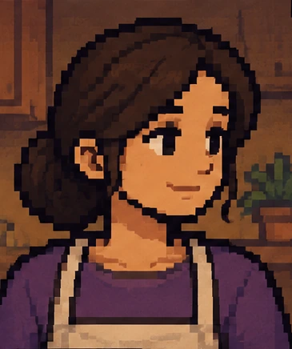
Apoyo a Distancia
Acompaña a Pepe mediante llamadas frecuentes con consejos y recordatorios para cuidar su salud y presupuesto.

Dueña del Puesto de Panuchos
Comerciante local de gran corazón que brinda a Pepe la oportunidad de trabajar como mesero para generar ingresos.
Explora la secuencia narrativa del prototipo. Diseñado con renderizado acelerado por GPU para desplazamiento rápido sin tirones.
Pepe aborda la combi desde Seybaplaya con sus maletas llenas de sueños y la incertidumbre de vivir por primera vez solo en la ciudad.

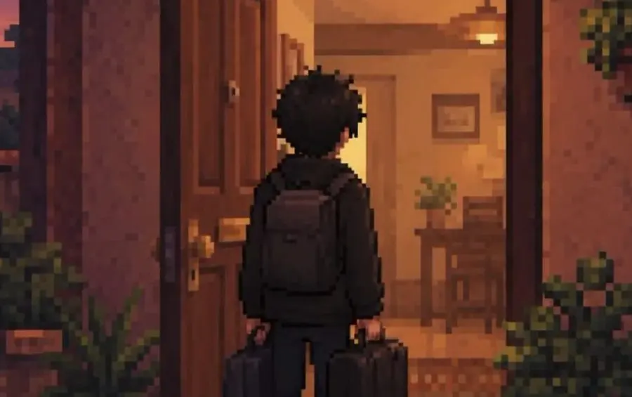
Al llegar a su alojamiento, Pepe debe desembalar y acondicionar el espacio. Se activa el minijuego de limpieza de habitación.
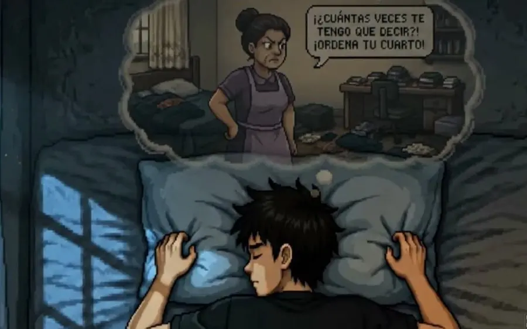
Mientras camina por las calles desconocidas hacia el supermercado, recibe una llamada confortante de su madre.
«Está bien, hijo. Compra solo lo necesario y no gastes de más. Cuídate mucho.»
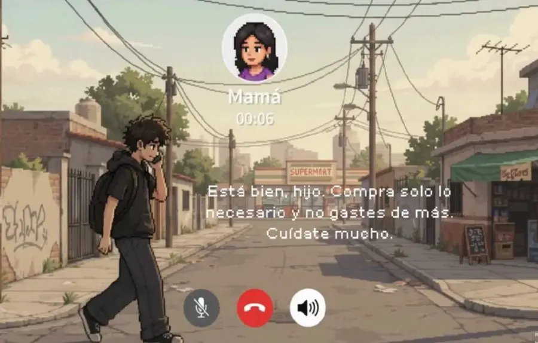
Pepe realiza su primera compra con un presupuesto estricto de $600 pesos en el minijuego del supermercado.

Tras calcular los gastos restantes, Pepe comprende que necesita ingresos inmediatos. Recorre el vecindario hasta pedir empleo con Doña Mary.
«Creo que me emocioné con la despensa... Ahora necesito conseguir un trabajo cuanto antes.»
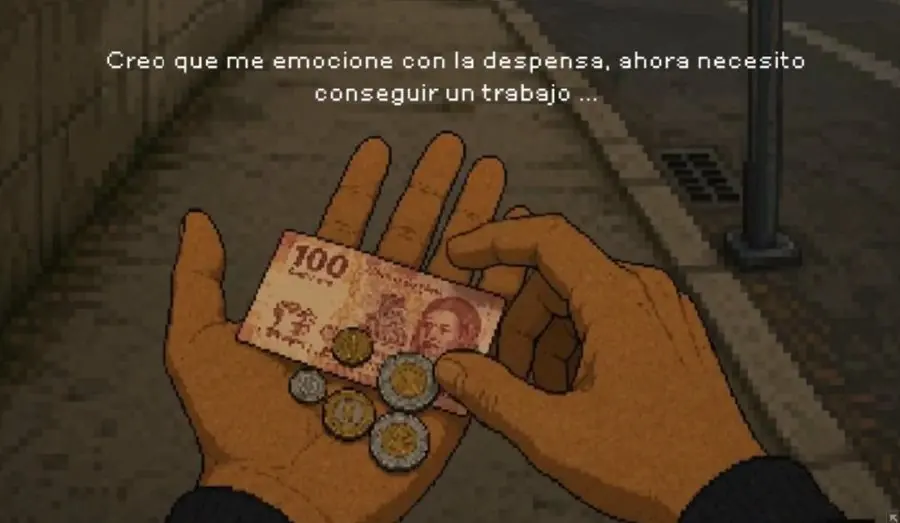

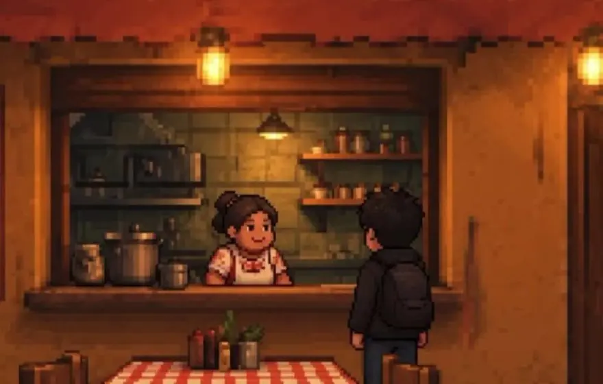
Comienza el turno de trabajo de Pepe. Servir platillos rápidamente a las mesas mientras esquiva obstáculos urbanos.

Asiste a sus asignaturas en la facultad. Observa el desenfado de otros compañeros y experimenta nostalgia por su pueblo natal.
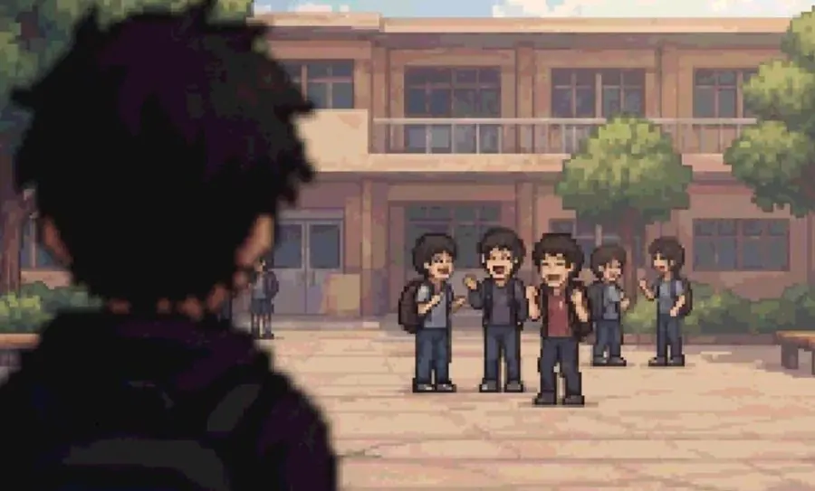
En el transporte público nocturno, Pepe procesa el agotamiento físico e introspectivo del día a día.
«Ver a todos tan adaptados en la escuela... a veces me hace sentir fuera de lugar.»

La sobrecarga de responsabilidades lo lleva a reflexionar sobre su capacidad para balancear la carrera profesional y el trabajo.
«¿Cómo voy a equilibrar la universidad y el trabajo? Apenas puedo con todo... Extraño mi casa.»

Con la repetición del esfuerzo surge la adaptación. Pepe se ajusta el mandil para un nuevo día con mayor firmeza emocional.
«Escuela, trabajo y la misma rutina... Aunque últimamente el peso se siente un poco más ligero.»

El proyecto combina tecnologías modernas de motores de juego con herramientas especializadas en arte de píxeles:
Motor principal programado en GDScript para la lógica de estados, minijuegos y físicas 2D.
Creación de spritesheets, animaciones por cuadros (frame-by-frame) y fondos en estética 8-bit / 16-bit.
Control de versiones colaborativo entre los desarrolladores back-end y diseñadores front-end.
Entorno inicial de pruebas conceptuales utilizado durante las primeras fases de diseño académico.
Selecciona un minijuego para inspeccionar sus mecánicas, objetivos y esquema de controles:
Pepe debe ordenar su cuarto para recuperar comodidad y reducir el desorden acumulado tras la mudanza.
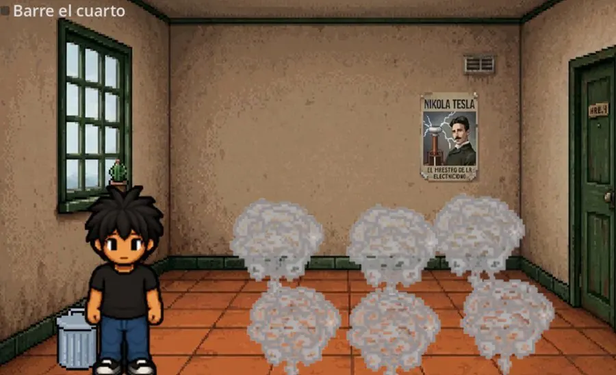


Administra un presupuesto limitado de $600 pesos en el supermercado asegurando la lista de alimentos vitales.
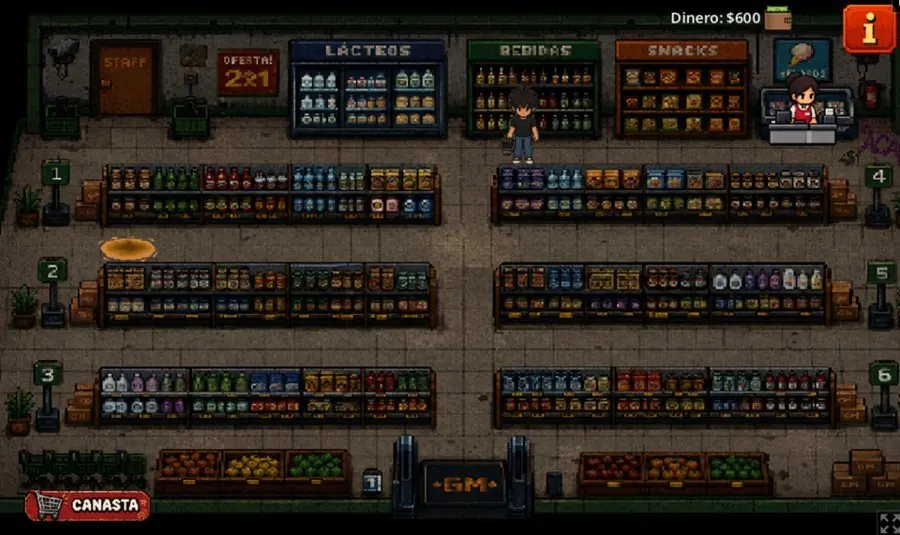
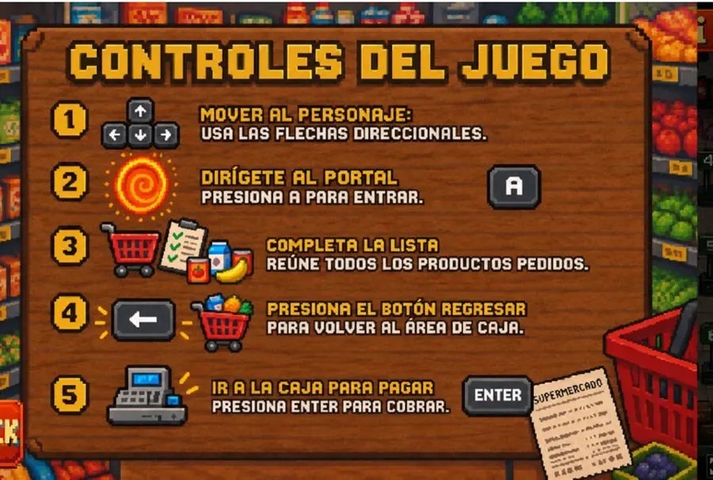
Atiende a los comensales en el puesto de Doña Mary sirviendo 5 platillos correctamente mientras esquivas perritos en movimiento.

Muestra del proceso creativo visual, paletas de color para escenas de día/noche y bocetos de escenarios:
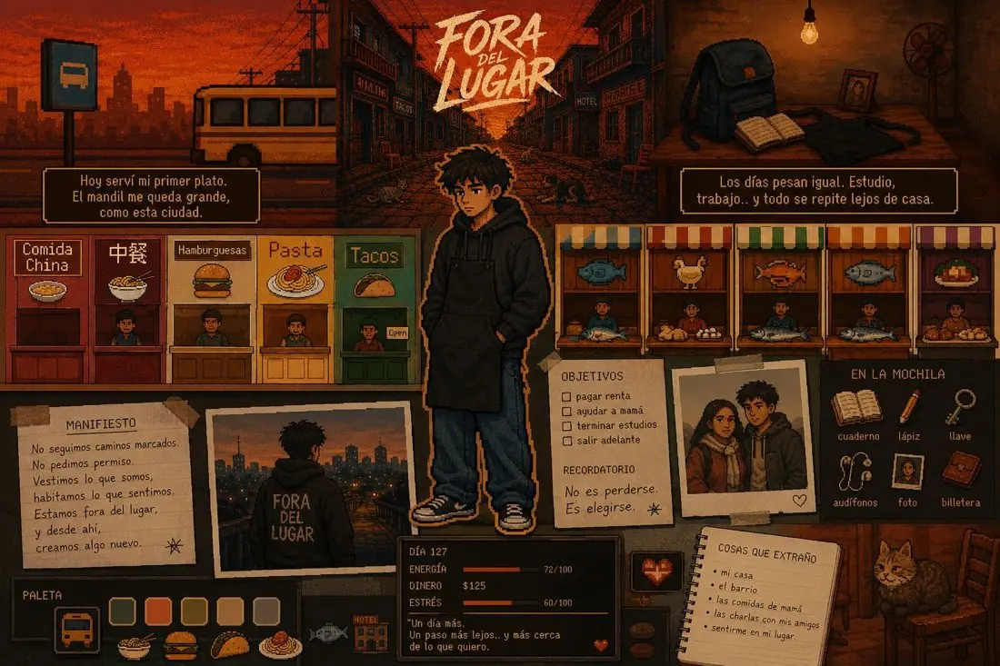

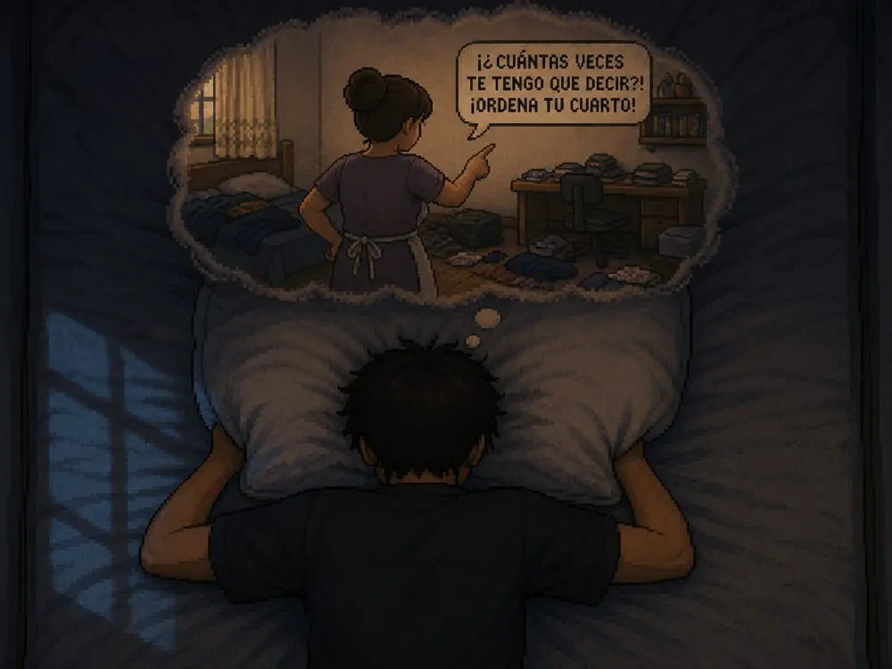
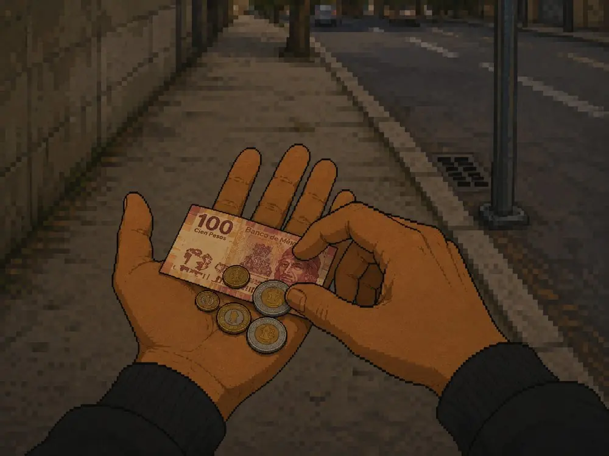
Para medir el efecto transformador del juego, el equipo diseñó el cuestionario «Viviendo Lejos: Experiencias de Estudiantes Foráneos».
Se evalúa la empatía en estudiantes no foráneos mediante cuestionarios comparativos antes y después de la sesión de juego.
Diez afirmaciones en escala de Likert del 1 al 5, donde 5 es el mayor acuerdo. Se cuentan todas las respuestas recibidas en cada encuesta.
| Ítem | Pre-test Post-test | Acuerdo |
|---|---|---|
| P1 Económicas | 4,65 4,83 |
89% → 94% |
| P2 Gastos | 4,86 4,90 |
98% → 97% |
| P3 Soledad y estrés | 4,75 4,87 |
95% → 95% |
| P4 Adaptación | 4,71 4,92 |
94% → 97% |
| P5 Estudio y trabajo | 4,66 4,87 |
89% → 95% |
| P6 Tareas del hogar | 4,56 4,81 |
86% → 94% |
| P7 Transporte | 4,65 4,86 |
93% → 94% |
| P8 Rendimiento y bienestar | 4,56 4,84 |
87% → 94% |
| P9 Ponerse en su lugar | 4,47 4,84 |
85% → 94% |
| P10 Difícil de percibir | 4,56 4,83 |
88% → 94% |
La media subió en los diez ítems. Los que más crecieron fueron ponerse en el lugar del foráneo (P9: 4,47 → 4,84) y las tareas del hogar (P6: 4,56 → 4,81).
Respondieron 50 estudiantes foráneos: 39 de Odontología, 9 de Humanidades y 2 de Ingeniería. Estos son los retos que más marcaron (opción múltiple):
| Ítem | Media | Acuerdo |
|---|---|---|
| P4 Dificultad de adaptación a vivir de forma independienteSu experiencia | 3,30 | 28% |
| P5 Carga de valerse por sí mismo/aSu experiencia | 3,24 | 38% |
| P6 Identificación con las situaciones del personajeEl juego | 3,66 | 54% |
| P7 El juego retrata fielmente la carga diariaEl juego | 4,24 | 78% |
| P8 Las acciones del juego reflejan el esfuerzo realEl juego | 4,00 | 62% |
| P9 Se representa bien vivir solo/a e independienteEl juego | 4,06 | 72% |
| P10 Es una herramienta efectiva para que un local entiendaEl juego | 4,28 | 76% |
Entre el 62 % y el 78 % de los foráneos respondió 4 o 5 en los ítems sobre qué tan fiel es el juego (P7 a P10), y el 76 % lo considera una herramienta efectiva para que un estudiante local entienda su día a día.
Alcance. No hubo grupo de control y el pre-test y el post-test tuvieron distinta cantidad de respuestas, por lo que se comparan como grupos. Casi todas las respuestas iniciales ya eran altas, así que el margen para medir un aumento fue pequeño. Detalle completo en el anexo de encuestas y escala de Likert.
Fora de Lugar cuenta con una propuesta narrativa sólida y prototipos totalmente funcionales en Godot 4. Se estructuraron los 10 actos de la historia base, el diseño artístico pixel art y la integración de tres minijuegos mecánicos.
El demo disponible incluye la primera etapa del semestre, lista para pruebas de usuario.
La hoja de ruta contempla expandir la ramificación narrativa con múltiples finales según la gestión emocional y de recursos del jugador.
Se liberarán los Actos 7 a 10 en fases posteriores, añadiendo más opciones de empleo, eventos universitarios e interacciones con nuevos personajes en la ciudad de Campeche.
Resumen del reporte científico en desarrollo por parte del equipo universitario:
«¿En qué medida una experiencia interactiva como Fora de Lugar puede contribuir a generar conciencia y empatía sobre las dificultades que enfrentan los estudiantes foráneos al vivir lejos de su lugar de origen?»
Evaluar estadísticamente si jugar Fora de Lugar incrementa la sensibilización social en estudiantes universitarios no foráneos.
La inmersión interactiva en las problemáticas de Pepe incrementará significativamente los índices de percepción de dificultades económicas, emocionales y académicas.
Diseño Visual & Front-End
Desarrollador Back-End & Gameplay
Desarrollador Back-End & Mecánicas
Asesor Principal
Coasesor